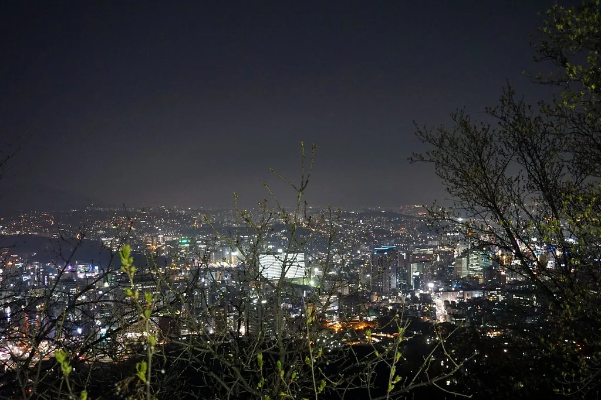

尹, '건진법사 몰랐다' 발언 허위사실공표 1심 징역형 집유…확정시 국힘 397억 반환
서울중앙지법 형사21부(재판장 조순표)는 27일 공직선거법상 허위사실공표 혐의로 기소된 윤석열 전 대통령에게 징역 1년 6개월에 집행유예 3년을 선고했다. 윤 전 대통령은 2022년 대선 후보 시절이던 그해 1월 17일 불교지도자 초청 간담회 자리에서 자신과 배우자 김건희 여사가 이른바 '건진법사' 전성배씨를 만난 적이 없다고 발언한 것으로 조사됐다. 검찰은 이 발언이 사실과 다르다고 보고 재판에 넘겼고, 법원은 심리 끝에 검찰 측 주장을 대부분 받아들였다.
재판부는 윤 전 대통령 부부가 2019년 무렵부터 전씨와 지속적으로 연락을 주고받았고 자택에서 만난 사실까지 있었다고 판단했다. 그런데도 공개 석상에서 배우자와 함께 전씨를 만난 적이 없다고 밝힌 것은 허위사실을 공표하려는 고의가 명백하다는 것이 재판부의 결론이다. 법원은 특히 이 발언이 대선을 앞두고 국민적 관심이 큰 사안에 관한 것이었던 만큼 유권자의 올바른 판단을 저해한 정도가 상당하다며 "범행이 매우 중대하다"고 지적했다.

이번 선고가 주목받는 이유는 형량이 그대로 확정될 경우 뒤따르는 파급 효과 때문이다. 공직선거법에 따라 대통령 당선인이 선거범죄로 징역형이나 100만원 이상 벌금형을 확정받으면 당선이 무효가 되고, 정당이 선거관리위원회로부터 지급받은 선거보전비용도 반환해야 한다. 이번 사건에서 국민의힘이 되돌려줘야 할 것으로 거론되는 금액은 약 397억원에 이른다. 다만 이는 대법원까지 이어지는 상급심 판단이 확정된 이후에나 현실화될 사안이어서, 향후 항소심과 상고심 결과에 관심이 쏠릴 수밖에 없다.
윤 전 대통령 측 변호인단은 선고 직후 재판부가 사실관계와 법리를 오인했다며 항소하겠다는 뜻을 밝힌 것으로 전해졌다. 변호인단은 문제가 된 발언이 사적 만남의 존재 여부를 부인한 것일 뿐, 선거의 공정성을 저해할 목적의 허위사실 공표로 보기는 어렵다는 취지로 다툴 방침인 것으로 알려졌다. 이에 따라 사건은 조만간 서울고법에서 다시 다뤄질 전망이며, 법조계에서는 항소심 심리에도 상당한 시일이 소요될 수 있다는 관측이 나온다.

정치권 반응은 엇갈린다. 야권 일각에서는 이번 판결이 전직 대통령의 선거 과정 발언에 대한 사법적 책임을 명확히 물었다는 점에서 의미가 있다고 평가한다. 반면 여권 일부와 윤 전 대통령 지지층에서는 재판부 판단이 지나치게 엄격하다며 반발하는 목소리도 나온다. 공직선거법 위반 사건이 대통령 재임 여부와 정당의 재정에까지 직접 영향을 미칠 수 있다는 점에서, 이번 판결은 향후 유사한 선거 관련 발언 사건의 판단 기준으로도 주목받을 전망이다.
법조계에서는 이번 사건이 상급심에서 어떤 결론에 이르든 상당한 사회적 파장이 불가피할 것으로 내다본다. 항소심에서 1심 판단이 뒤집힐 경우 정치적 논란은 다소 가라앉을 수 있지만, 반대로 유죄 취지가 유지되거나 형량이 조정될 경우 선거보전비용 반환 문제를 둘러싼 공방이 한층 격화될 가능성이 크다. 사건의 최종 향방이 확정되기까지는 상당한 시간이 소요될 것으로 보이는 만큼, 정치권과 법조계 모두 항소심 절차를 예의주시하는 분위기다.
중앙선거관리위원회 역시 이번 판결 확정 여부에 따라 후속 절차를 준비해야 하는 입장이다. 선거보전비용 반환이 실제로 이뤄질 경우 정당 재정에 미치는 영향이 작지 않은 만큼, 국민의힘 내부에서도 재판 결과를 주시하며 대응 방안을 검토하고 있는 것으로 전해진다. 정치권에서는 이번 사건을 계기로 선거 과정에서의 발언 하나하나가 사후에 얼마나 무거운 법적 책임으로 이어질 수 있는지를 보여주는 사례로 남을 것이라는 평가도 나온다.